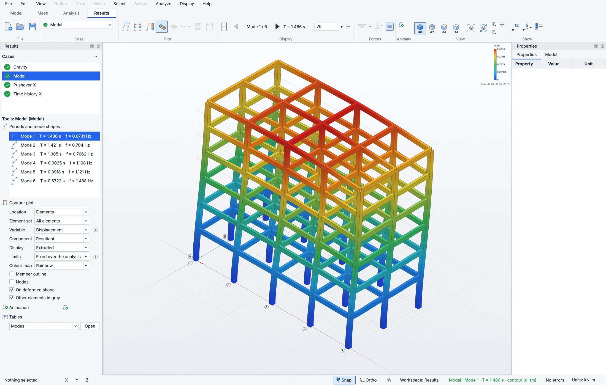
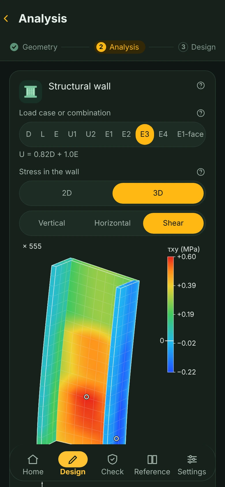

Powerful structural analysis, practical design
Binacore Desktop brings the power of OpenSees to a modern 3D interface. Binacore App designs reinforced concrete on your phone, clause by clause.
Nonlinear analysis you can see
A modern platform for OpenSees. Model, run and read the results in 3D.
Windows and macOS Explore Desktop
Concrete design, clause by clause
Reinforced concrete, analysed, designed and checked on your phone.
Android and iOS Explore App
What Binacore does
Nonlinear analysis
Static, modal, pushover, time history and response spectrum, run in OpenSees.
Real members
Fibre sections, plastic hinges and the OpenSees material library.
Results on the structure
Deformed shapes, force diagrams and contours in 3D, at any step.
Design by the code
Reinforced concrete members analysed and designed on your phone.
Every check with its clause
Each result names the clause it comes from.
Drawings you can read
The reinforcement drawn in section and elevation.
One platform for a wide range of engineering applications
Trusted by universities and engineers
Accuracy you can trust
Design rules read from the code, at the clause. Results checked against theoretical solutions and independent hand calculations.
How Binacore is checked